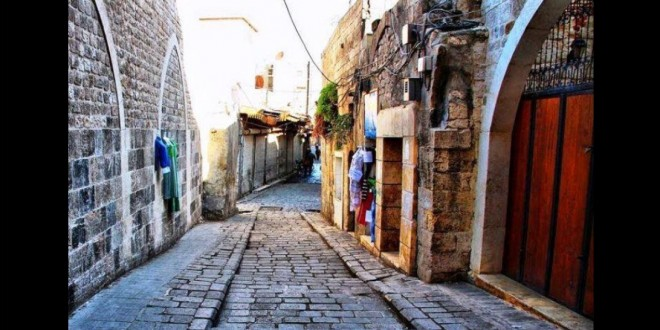

Add a description of the image here
 Al-Hasakah (Arabic: الحسكة, Kurdish: Hesîçe, Syriac: ܚܣܟܗ, romanized: Ḥasake) also known as Al-Hasakeh, Al-Hasaka or simply Hasakah, is the capital city of the Al-Hasakah Governorate and it is located in the far northeastern corner of Syria.[1] With a population of 188,160 residents in 2004, Al-Hasakah is among the ten largest cities in Syria and the largest in the governorate. It is the administrative center of a nahiyah ("subdistrict") consisting of 108 localities with a combined population of 251,570 in 2004.[2] Al-Hasakah has an ethnically diverse population of Kurds, Arabs and Assyrians and a smaller number of Armenians.[3][4] The Khabur River runs through Al-Hasakah and the rest of the governorate. Al-Hasakah is 80 kilometres (50 miles) south of the Turkish border-city of Qamishli. The Khabur River, a tributary of the Euphrates River flows through the city, downriver from Ras al-Ayn, another border town. The Jaghjagh River flows into the Khabur River at Al-Hasakah..In the city centre, an ancient tell is identified by Dominique Charpin as the location of the city of Qirdahat.[5] Another possibility is that it was the site of the ancient Aramean city of Magarisu, mentioned by the Assyrian king Ashur-bel-kala who fought the Arameans near the city.[6] The etymology of Magarisu is Aramaic (from the root mgrys) and means "pasture land".[7] The city was the capital of the Aramean state of Bit-Yahiri invaded by Assyrian kings Tukulti-Ninurta II and Ashurnasirpal II.[8] Excavations in the tell discovered materials dating to the Middle-Assyrian, Byzantine and Islamic eras. The last level of occupation ended in the fifteenth century.[9] A period of 1,500 years separated between the Middle-Assyrian level and the Byzantine level.[10] In Ottoman times the town was insignificant. Today's settlement was established in April 1922 by a French military post. After the expulsion and genocide of the Armenians in the then Ottoman Empire many refugees fled to the city and began to develop it in the 1920s. During the French mandate period, Assyrians, fleeing ethnic cleansings in Iraq during the Simele massacre, established numerous villages along the Khabur River during the 1930s. French troops were stationed on the Citadel Hill during that time. In 1942 there were 7,835 inhabitants in al-Hasakah, several schools, two churches and a gas station. The new city grew from the 1950s to the administrative center of the region. The economic boom of the cities of Qamishli and al-Hasakah was a result of the irrigation projects started in the 1960s which transformed Northeast Syria into the main cotton-growing area. The 1970s brought oil production from the oil fields of Qara Shuk and Rumaylan in the extreme northeast.